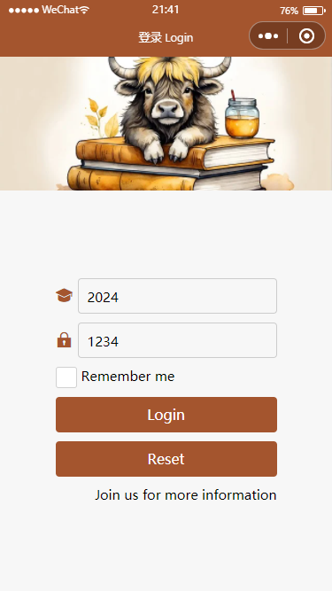

音乐播放器
Player
- 目的
-
了解异步函数执行的过程掌握背景音频API的使用和注意事项进一步熟悉网络请求的基本过程
- 内容
-
素材准备服务器准备；如无可以使用在线素材，如 大树小站 在线资源音频API使用
- 步骤
- 第一阶段 初体会
-
创建项目或页面在逻辑js中，创建音乐播放器BackgroundAudioManager实例指定title和src
- 第二阶段 音乐播放器
-
数据支持
. 播放列表 lists；节点信息参考如下
{ "id": 5, "title": "微风细雨", "singer": "wang", "src": "/music/wang.mp3", "coverImgUrl": "/avatar/avatar5.png" }. 播放列表索引 indMusic
. 播放状态 isPause
. 播放进度 valueMusic
. 播放时长 durationMusic
主要过程. 创建项目或页面，修改基本配置信息
. 导入音频素材列表；以大树小站为例
wx.request({ url: 'http://127.0.0.1:3000/utils/data/song_list.json', success: (res) => { console.log(res.data); this.setData({ lists: res.data.cont }) } });. 创建音乐播放器BackgroundAudioManager实例
. 侦听音乐播放器BackgroundAudioManager实例
. 播放、暂停：播放、暂停通过背景音频API实现
. 上一首、下一首：通过播放列表索引 indMusic 增加或减少实现
. 进度调节：利用滑块组件 slider 实现
. 播放时长、总时长：获取音频实例的相关属性
. 音量调节：略
. 封面图片特效：略
. 其它设计：略
- 参考效果
- 除了必要的登录凭证信息外，其它可自由设计
-
 登录 login - 更多效果
-

登录 login - 要求
-
按照以上步骤分别完成设计与开发规范开发；独立完成；突出个人设计特点和风格实验报告：采用学院统一下发的格式文件，以图片或代码形式展示并说明实施过程、各部分功能、具体内容和实现细节，并按照要求命名，最后导出为PDF，提交个人学习通作业未按要求在规定时间内提交视为无效，不得分相关格式规范，请参考 论文格式规范 Paper Prettier
- 特别提示
- 实验报告除了各要素齐全外，特别要体现
-
接口文档和字段说明；其中信息字段info要体现个人信息或小组信息结构WXML - 代码逻辑js - 代码效果 - 截图，统一宽度，高度随内容、有编号、有说明标题，如：图1 页面布局
参考代码